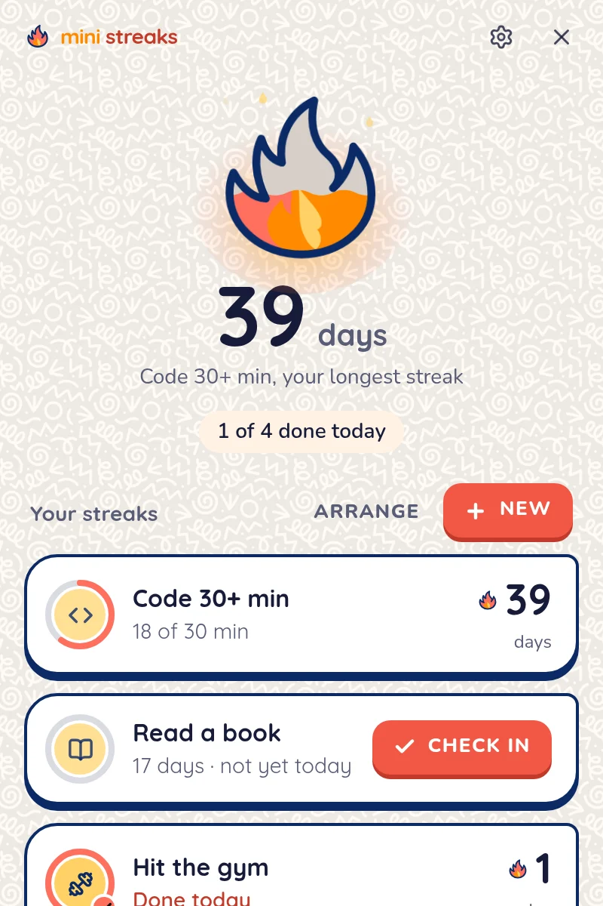
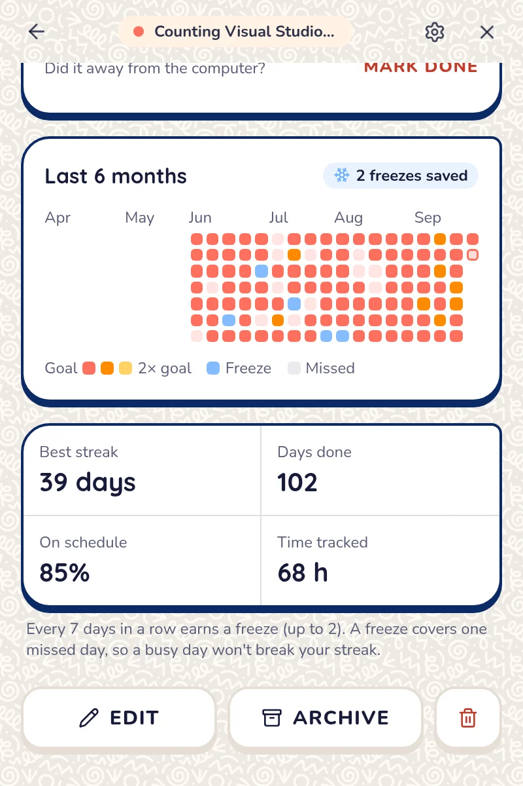

Counts on its own
Choose your editor, your notes app or a website. Time only counts while one of them is focused, and it pauses when you step away.
Pick a habit and the apps it happens in. Mini Streaks quietly counts the minutes while you work, fills your flame as you go, and grows your streak every day you hit your goal.
Free for Linux, Windows and macOS.

Choose your editor, your notes app or a website. Time only counts while one of them is focused, and it pauses when you step away.
The gym, a chapter of a book, a guitar practice. One tap marks it done, and one more tap undoes it.
Rest days never break a streak, and every week in a row earns a freeze for the day life gets in the way.

Your flame changes as the streak does: ember, spark, flame, blaze, then inferno. Six months of history show which days burned hottest.
Everything stays on your computer. No account, no cloud.
Pick the file for your computer.
Windows 10 and 11
Installer (.exe) MSI packageIf Windows shows “protected your PC”, choose More info, then Run anyway.
macOS 11 or later
Apple silicon (.dmg) Intel (.dmg)The first time, right-click the app and choose Open. For window titles, allow Screen Recording when asked.